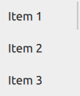

ScrollView QML Type
Scrollable view. More...
| Import Statement: | import QtQuick.Controls |
| Inherits: |
Properties
- contentChildren : list<Item>
- contentData : list<QtObject>
- effectiveScrollBarHeight : real
(since 6.6) - effectiveScrollBarWidth : real
(since 6.6)
Detailed Description
ScrollView provides scrolling for user-defined content. It can be used to either replace a Flickable, or to decorate an existing one.
The first example demonstrates the simplest usage of ScrollView.
ScrollView { width: 200 height: 200 Label { text: "ABC" font.pixelSize: 224 } }
The second example illustrates using an existing Flickable, that is, a ListView.
ScrollView { width: 200 height: 200 ListView { model: 20 delegate: ItemDelegate { text: "Item " + index required property int index } } }
Note: As of Qt-6.0, ScrollView automatically clips its contents if you don't use a Flickable as a child. If this is not wanted, you can set your own Flickable as a child, and control the clip property on the Flickable explicitly.
Sizing
As with Flickable, there are several things to keep in mind when using ScrollView:
- If only a single item is used within a ScrollView, the content size is automatically calculated based on the implicit size of its contained item. However, if more than one item is used (or an implicit size is not provided), the contentWidth and contentHeight properties must be set to the combined size of its contained items.
- If the content size is less than or equal to the size of the ScrollView, it will not be scrollable.
- If you want the ScrollView to only scroll vertically, you can bind contentWidth to availableWidth (and vice versa for contentHeight). This will let the contents fill out all the available space horizontally inside the ScrollView, taking any padding or scroll bars into account.
Scroll Bars
The horizontal and vertical scroll bars can be accessed and customized using the ScrollBar.horizontal and ScrollBar.vertical attached properties. The following example adjusts the scroll bar policies so that the horizontal scroll bar is always off, and the vertical scroll bar is always on.
ScrollView { // ... ScrollBar.horizontal.policy: ScrollBar.AlwaysOff ScrollBar.vertical.policy: ScrollBar.AlwaysOn }
Touch vs. Mouse Interaction
On touch, ScrollView enables flicking and makes the scroll bars non-interactive.

When interacted with a mouse device, flicking is disabled and the scroll bars are interactive.

Scroll bars can be made interactive on touch, or non-interactive when interacted with a mouse device, by setting the interactive property explicitly to true or false, respectively.
ScrollView { // ... ScrollBar.horizontal.interactive: true ScrollBar.vertical.interactive: true }
See also ScrollBar, ScrollIndicator, Customizing ScrollView, Container Controls, and Focus Management in Qt Quick Controls.
Property Documentation
This property holds the list of content children.
The list contains all items that have been declared in QML as children of the view.
Note: Unlike contentData, contentChildren does not include non-visual QML objects.
See also Item::children and contentData.
This property holds the list of content data.
The list contains all objects that have been declared in QML as children of the view.
Note: Unlike contentChildren, contentData does include non-visual QML objects.
See also Item::data and contentChildren.
effectiveScrollBarHeight : real |
This property holds the effective height of the horizontal scrollbar. When the scrollbar policy is QQuickScrollBar::AlwaysOff or the scrollbar is not visible, this property is 0.
This property was introduced in Qt 6.6.
See also ScrollBar::policy.
effectiveScrollBarWidth : real |
This property holds the effective width of the vertical scrollbar. When the scrollbar policy is QQuickScrollBar::AlwaysOff or the scrollbar is not visible, this property is 0.
This property was introduced in Qt 6.6.
See also ScrollBar::policy.